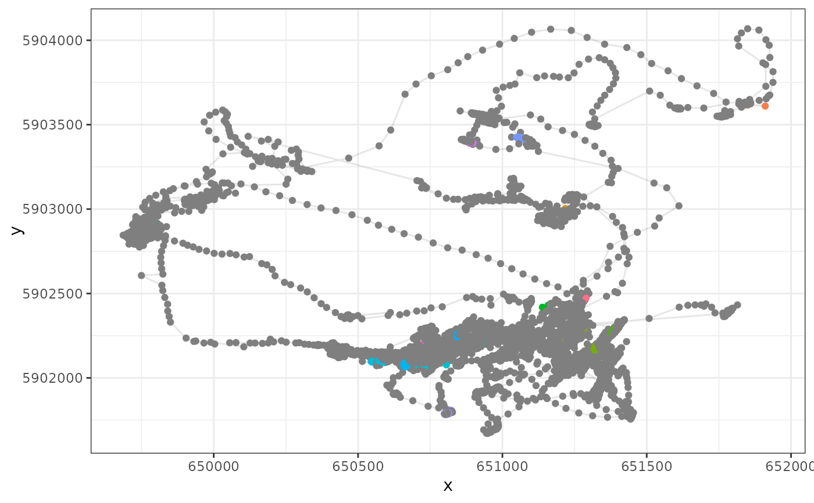

Construct residence patches from position data
Source:R/fun_make_res_patch_speed.r
atl_res_patch_speed.RdA cleaned movement track of one individual at a time can be classified into
residence patches using the
function atl_res_patch_speed.
The function expects a specific organisation of the data: there should be
at least the following columns, X, Y, and time,
corresponding to the coordinates, and the time as POSIXct.
atl_res_patch_speed requires only three parameters: (1) the maximum
speed threshold between localizations (called max_speed), (2) the
distance threshold between clusters of positions (called
lim_spat_indep), and (3) the time interval between clusters
(called lim_time_indep).Clusters formed of fewer than a minimum
number of positions can be excluded.The exclusion of clusters with few
positions can help in removing bias due to short stops, but if such short
stops are also of interest, they can be included by reducing the
min_fixes argument. Position covariates such as speed may also be
summarised patch-wise by passing covariate names and summary functions as
character vectors to the summary_variables and
summary_functions arguments, respectively.
Arguments
- data
A dataframe of any class that is or extends data.frame of one individual only. The dataframe must contain at least two spatial coordinates,
XandY, and a temporal coordinate,time.- max_speed
A numeric value specifying the maximum speed (m/s) between two coordinates that would be considered non-transitory
- lim_spat_indep
A numeric value of distance in metres of the spatial distance between two patches for them to the considered independent.
- lim_time_indep
A numeric value of time in minutes of the time difference between two patches for them to be considered independent.
- min_fixes
The minimum number of fixes for a group of spatially-proximate number of ponts to be considered a preliminary residence patch.
- min_duration
The minimum duration (in seconds) for classifying residence patches.
- summary_variables
Optional variables for which patch-wise summary values are required. To be passed as a character vector.
- summary_functions
The functions with which to summarise the summary variables; must return only a single value, such as median, mean etc. To be passed as a character vector.
Value
A data.frame extension object. This dataframe has the added column
patch, patchdata, and polygons, indicating the patch
identity, the localization data used to construct the patch, and the polygons
of residence patches based on the lim_spat_indep. In addition, there
are columns with patch summaries: nfixes, dist_in_patch, dist_bw_patch and
statistics based on the summary_variables and summary_functions
provided.
summary variables.
Examples
require(data.table)
require(ggplot2)
#> Loading required package: ggplot2
# Load data
d <- atl_get_data_csv() |> data.table()
#> Reading file: /home/runner/work/_temp/Library/tools4watlas/extdata/redknot_2707_WATLAS_exampledata.csv
setnames(d, c("X", "Y"), c("x", "y"))
# Calculate residency patches
rp <- atl_res_patch_speed(
d,
max_speed = 3, lim_spat_indep = 75, lim_time_indep = 180, min_fixes = 3,
min_duration = 120,
summary_functions = c("mean", "median", "sd", "min", "max", "first", "last")
)
# Extract data from all residency patches
dr <- rp[, rbindlist(lapply(patchdata, function(x) cbind(x))), by = patch]
# Merge with data
d <- merge(d, dr[, .(TAG, posID, patch)], by = c("TAG", "posID"), all.x = TRUE)
# Plot data
ggplot(d) +
geom_path(aes(x, y), alpha = 0.1) +
geom_point(aes(x, y, color = as.character(patch)), show.legend = FALSE) +
theme_bw()
